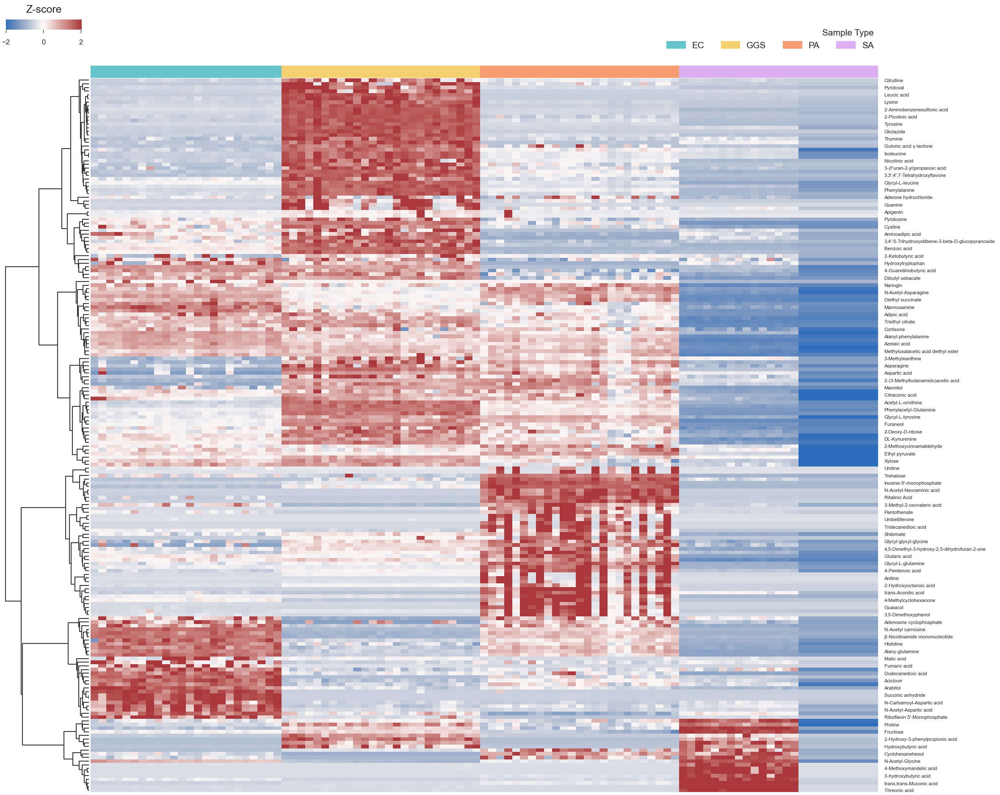

MINT - Metabolomics Integrator
MINT is a sophisticated post-processing tool designed for liquid chromatography-mass spectrometry (LCMS) based metabolomics. Metabolomics, the comprehensive study of small molecule metabolites within biological samples, plays a pivotal role in biomedical research. These metabolites serve as crucial biomarkers for disease diagnostics, therapeutic interventions, and pathogen identification.
 Figure 1: Screenshot of the MINT browser interface.
Figure 1: Screenshot of the MINT browser interface.
Quickstart
Check out the Quickstart to jump right into it.
What problem(s) does this tool solve?
A typical biological sample, such as human blood or agar with bacteria, can contain thousands of metabolites such as sugars, alcohols, amino acids, nucleotides, and more. To measure the composition of such a sample, mass spectrometry can be used.
However, many metabolites share exact masses with other metabolites and therefore would be indistinguishable in the mass spectrometer. Therefore, compounds are sorted using column chromatography and spread out over time. The metabolites that enter the column at the same time interact with the column in different ways based on their specific stereochemistry. These interactions let compounds move faster or slower through the column, and therefore the compounds will elute at different times. That way, various metabolites can be analyzed successively over a certain timeframe rather than simultaneously.
The mass spectrometer that follows the chromatographic column measures the masses given at each point in time and returns a time-dependent spectrogram. An example of an LCMS measurement is visualized in the following figure:

Figure 2: A 2D-histogram of MS1 recorded intensities taken over a time span of 10 minutes. Shown are m/z values between 100 and 600 [Da/z].
If we zoom into this figure to a very narrow band of masses, the traces of individual metabolites can be observed. The trace of succinate (or succinic acid) is shown here:

Figure 3: A zoom into the 2D histogram shown in Figure 1.
This illustrates how dense and precise the information in an LCMS measurement is. For comparison, the M/Z value of an electron is 5.489e-4.
Processing LCMS Data
After the data has been collected on a mass spectrometer (MS) and stored in a (usually) vendor-specific format, the data can be subjected to analysis. To process data with MINT, the data has to be provided in an open format (mzML or mzXML).
Instead of analyzing the raw LCMS data, it is common practice to deconvolute the data and sum up the signal of individual metabolites. The processed data should be proportional to the amount of metabolite in the sample. However, the measured intensities will not reflect the relative concentrations between different compounds, only between different samples. For example, due to different ion efficiencies, compound A might have a stronger signal than compound B even if compound B is present at a higher concentration. Therefore, the intensities can only be used to compare relative amounts. To estimate absolute concentrations, a calibration curve has to be created for every single metabolite.
The binning transforms the semi-structured data into a structured format where each column stands for one particular metabolite. Often the data is normalized for each metabolite to reflect the relative intensities across multiple samples. The structured data can then be subjected to common data analyses such as dimensionality reduction or clustering analysis.

Figure 4: Clustering analysis for a set of metabolites across 100 different samples including 4 different pathogens (EC: E. coli, GGS: S. dysgalactiae, PA: P. aeruginosa, SA: S. aureus).
{kind=link}
Future Directions
MINT is continually evolving to incorporate new features and improvements. Future developments include enhanced data visualization tools, integration with other omics data, and improved user interface design to cater to a broader range of users. Community support is vital for the ongoing development of MINT, and we encourage users to contribute their feedback and engage with the development team.
Conclusion
In summary, MINT is a powerful tool for the post-processing of LCMS-based metabolomics data, offering significant advantages in data analysis and interpretation. Its robust design and comprehensive features make it an invaluable resource for researchers in the field of metabolomics. We invite the scientific community to adopt MINT in their workflows and contribute to its continuous improvement.